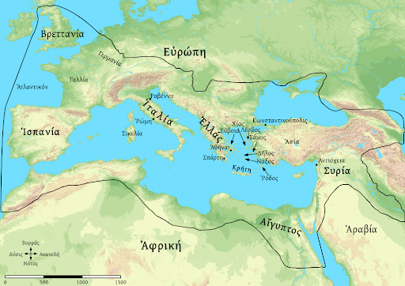
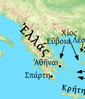
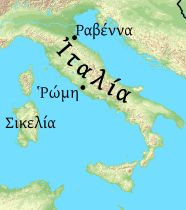
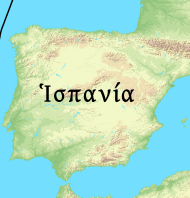
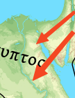
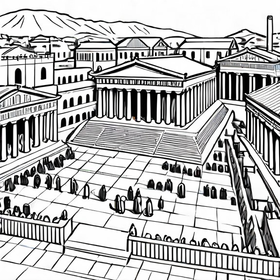

Ἡ Ἑλλάς

Ἡ Ἰταλία

Ἡ Ἱσπανία

Ἡ Ἑλλάς ἐστιν ἐν τῇ Εὐρώπῃ. ἡ Ῑ̓ταλίᾱ ἐν τῇ Εὐρώπῃ ἐστίν. ἡ Ἑλλὰς καὶ ἡ Ῑ̓ταλίᾱ εἰσὶν ἐν τῇ Εὐρώπῃ. καὶ ἡ Ἱσπᾱνίᾱ ἐστὶν ἐν τῇ Εὐρώπῃ. καὶ ἡ Ἱσπᾱνίᾱ καὶ ἡ Ῑ̓ταλίᾱ καὶ ἡ Ἑλλάς εἰσιν ἐν τῇ Εὐρώπῃ.
ἡ Αἴγυπτος ἐν τῇ Εὐρώπῃ οὐκ ἔστιν, ἡ Αἴγυπτος ἐν τῇ Ᾱ̓φρικῇ ἐστιν. ἡ Γαλλία οὐκ ἔστιν ἐν τῇ Ᾱ̓φρικῇ, ἡ Γαλλίᾱ ἐστὶν ἐν τῇ Εὐρώπῃ. ἡ δὲ Συρίᾱ οὐκ ἔστιν ἐν τῇ Εὐρώπῃ, ἀλλὰ ἐν τῇ Ἀσίᾳ. καὶ ἡ Ἀραβίᾱ ἐν τῇ Ἀσίᾳ ἐστίν. ἡ Συρίᾱ καὶ ἡ Ἀραβίᾱ ἐν τῇ Ἀσίᾳ εἰσίν. ἡ δὲ Γερμανίᾱ οὐκ ἔστιν ἐν τῇ Ἀσίᾳ, ἀλλὰ ἐν τῇ Εὐρώπῃ ἐστίν. καὶ ἡ Βρεττανίᾱ ἐν τῇ Εὐρώπῃ ἐστίν. ἡ Γερμανίᾱ καὶ ἡ Βρεττανίᾱ εἰσὶν ἐν τῇ Εὐρώπῃ.
ποῦ
Ἆρα ἡ Γαλλίᾱ ἐν τῇ Εὐρώπῃ; ἡ Γαλλίᾱ ἐστὶν ἐν τῇ Εὐρώπῃ. Ἆρα ἡ Ἀντιόχεια ἐν τῇ Γαλλίᾳ ἐστίν; ἡ Ἀντιόχεια ἐν τῇ Γαλλίᾳ οὐκ ἔστιν. ποῦ ἐστιν ἡ Ἀντιόχεια; ἡ Ἀντιόχειά ἐστιν ἐν τῇ Συρίᾳ. ποῦ ἐστιν ἡ Συρίᾱ; ἡ δὲ Συρίᾱ ἐν τῇ Ἀσίᾳ ἐστίν. ποῦ εἰσιν ἡ Γαλλίᾱ τε καὶ ἡ Γερμανίᾱ; καὶ ἡ Γαλλίᾱ καὶ ἡ Γερμανίᾱ ἐν τῇ Εὐρώπῃ εἰσίν.
Ὁ Νεῖλος

ποταμός
νῆσος
πόλις

Ἆρα ὁ Νεῖλος ἐν τῇ Εὐρώπῃ ἐστίν; ὁ Νεῖλος ἐν τῇ Εὐρώπῃ οὐκ ἔστιν. ποῦ ὁ Νεῖλός ἐστιν; ὁ Νεῖλός ἐστιν ἐν τῇ Ᾱ̓φρικῇ. ὁ δὲ Ῥῆνος ποῦ ἐστιν; ὁ Ῥῆνος ἐν τῇ Γερμανίᾳ ἐστίν. ποταμὸς ὁ Νεῖλός ἐστιν. καὶ ὁ Ῥῆνος ποταμός ἐστιν. καὶ ὁ Νεῖλος καὶ ὁ Ῥῆνός εἰσι ποταμοί. καὶ ὁ Ἴστρος ποταμός ἐστιν. ὁ μὲν Ῥῆνος καὶ ὁ Ἴστρος εἰσὶ ποταμοὶ ἐν τῇ Γερμανίᾳ, ὁ δὲ Θύμβρις ἐν τῇ Ῑ̓ταλίᾳ. ἀλλὰ ὁ Ὀρόντης ἐστὶ ποταμὸς ἐν τῇ Συρίᾳ.
ἡ Σικελίᾱ ἐστὶ νῆσος. καὶ ἡ Κρήτη ἐστὶ νῆσος. καὶ ἡ Κρήτη καὶ ἡ Σικελίᾱ εἰσὶ νῆσοι. νῆσός ἐστιν ἡ Βρεττανίᾱ. ἡ δὲ Ῑ̓ταλία νῆσος οὐκ ἔστιν. ἡ μὲν Σικελίᾱ νῆσος μεγάλη ἐστίν, ἡ δὲ Δῆλός ἐστι νῆσος μῑκρά. ἡ δὲ Βρεττανίᾱ οὐ νῆσος μῑκρά, ἀλλὰ νῆσος μεγάλη ἐστίν. ἡ Σικελίᾱ καὶ ἡ Κρήτη οὐ νῆσοι μῑκραί, ἀλλὰ νῆσοι μεγάλαι εἰσίν.
ἡ Σπάρτη πόλις ἐστίν. ἡ Σπάρτη ἐστὶν ἐν τῇ Ἑλλάδι. ἡ Σπάρτη ἐστὶ πόλις Ἑλληνική. καὶ αἱ Ἀθῆναί εἰσὶ πόλις Ἑλληνική. καὶ ἡ Σπάρτη καὶ αἱ Ἀθῆναι πόλεις Ἑλληνικαί εἰσιν. ἡ δὲ Ῥώμη ἐστὶ πόλις ἐν τῇ Ῑ̓ταλίᾳ. ἡ δὲ Ἀντιόχεια πόλις ἐν τῇ Συρίᾳ ἐστίν. Ἡ Ἀντιόχεια, αἱ Ἀθῆναι, ἡ Ῥώμη εἰσὶ πόλεις μεγάλαι.
ποῦ εἰσιν αἱ Ἀθῆναι; αἱ Ἀθῆναί εἰσιν ἐν τῇ Ἑλλάδι. ποῦ ἡ Ῥώμη ἐστίν; ἐν τῇ Ἰταλίᾳ ἐστὶν ἡ Ῥώμη. πόλις Ῥωμαϊκή ἐστιν ἡ Ῥώμη. ποῦ ἐστιν ἡ Κωνσταντινούπολις; ἡ Κωνσταντινούπολίς ἐστιν ἐν τῇ Ἑλλάδι. ἆρα ἡ Κωνσταντινούπολις πόλις Ἑλληνικὴ ἢ Ῥωμαϊκή; ἔστι πόλις καὶ Ἑλληνικὴ καὶ Ῥωμαϊκή.
Ῥάβεννα οὐκ ἔστι πόλις Ἑλληνική, ἀλλὰ πόλις Ῥωμαϊκή. ἡ Ῥώμη καὶ ἡ Ῥάβεννα πόλεις Ῥωμαϊκαί εἰσιν. πόλεις δὲ Ἑλληνικαί εἰσιν αἱ Ἀθῆναι καὶ ἡ Σπάρτη. ἡ δὲ Σικελίᾱ οὐκ ἔστιν νῆσος Ἑλληνική, ἀλλὰ νῆσος Ῥωμαϊκή. ἡ δὲ Κρήτη, ἡ Ῥόδος, ἡ Νάξος, ἡ Σάμος, ἡ Χίος, ἡ Λέσβος, ἡ Λῆμνος, καὶ ἡ Εὔβοιά εἰσι νῆσοι Ἑλληνικαί.
ἐν τῇ Ἑλλάδι πολλαὶ νῆσοί εἰσιν. ἐν τῇ Ῑ̓ταλίᾳ καὶ ἐν τῇ Ἑλλάδι εἰσὶ πολλαὶ πόλεις. ἐν τῇ Γαλλίᾳ καὶ ἐν τῇ Γερμανίᾳ πολλοί εἰσι ποταμοί. ἆρα πολλοὶ ποταμοὶ καὶ πολλαὶ πόλεις ἐν τῇ Ἀραβίᾳ; ἐν τῇ Ἀραβίᾳ οὐ πολλοί, ἀλλ’ ὀλίγοι ποταμοί εἰσι καὶ ὀλίγαι πόλεις.
ἆρα μὴ ἡ Κρήτη πόλις ἐστίν; οὐχί, ἡ Κρήτη πόλις οὐκ ἔστιν. τί ἐστιν ἡ Κρήτη; ἡ Κρήτη νῆσός ἐστιν. ἆρα μὴ ἡ Σπάρτη νῆσός ἐστιν; οὐ νῆσός ἐστιν ἡ Σπάρτη. τί ἡ Σπάρτη ἐστίν; ἀλλὰ πόλις ἐστὶν ἡ Σπάρτη. ὁ δὲ Ὀρόντης, τί ἐστιν; ὁ Ὀρόντης ἐστὶ ποταμὸς μέγας. ἆρα μὴ τὸ πέλαγος τὸ Ἀτλαντικὸν μῑκρόν ἐστιν; οὐ μῑκρόν ἐστιν, ἀλλὰ μέγα ἐστὶ τὸ πέλαγος.
ποῦ ἐστι ἡ ἀρχὴ ἡ Ῥωμαϊκή; ἡ Ῥωμαϊκὴ ἀρχή ἐστι ἐν τῇ Εὐρώπῃ, καὶ ἐν τῇ Ἀσίᾳ, καὶ ἐν τῇ Ᾱ̓φρικῇ. ἡ Ἱσπανίᾱ καὶ ἡ Συρίᾱ καὶ ἡ Αἴγυπτος ἐπαρχίαι Ῥωμαϊκαί εἰσιν. ἡ δὲ Γερμανίᾱ οὐκ ἔστι ἐπαρχίᾱ Ῥωμαϊκή. ἡ Γερμανίᾱ ἐν τῇ ἀρχῇ τῇ Ῥωμαϊκῇ οὐκ ἔστιν. ἀλλὰ ἡ Γαλλίᾱ καὶ ἡ Βρεττανίᾱ εἰσὶν ἐπαρχίαι Ῥωμαϊκαί. ἐν τῇ Ῥωμαϊκῇ ἀρχῇ πολλαί εἰσιν ἐπαρχίαι. μεγάλη ἐστὶν ἡ ἀρχὴ ἡ Ῥωμαϊκή!
τὸ εἷς καὶ τὸ δύο ἀριθμοί εἰσιν. καὶ τὸ τρεῖς ἀριθμός ἐστιν. τὰ εἷς, δύο, τρεῖς ἀριθμοὶ Ἑλληνικοί εἰσιν. τὸ εἷς καὶ τὸ δύο εἰσι μῑκροὶ ἀριθμοί. χῑ́λια μέγας ἀριθμός ἐστιν.
τὸ Α καὶ τὸ Β γράμματά ἐστιν. καὶ τὸ Γ γράμμα ἐστίν. τὰ Α, Β, Γ ἐστὶ τρία γράμματα. τὸ Α ἐστὶ τὸ γράμμα τὸ πρῶτον, τὸ Β τὸ δεύτερον γράμμα, τὸ Γ τὸ τρίτον γράμμα. τὸ Γ γράμμα Ἑλληνικόν ἐστιν. τὸ C ἐστὶ γράμμα Ῥωμαϊκόν. τὸ C καὶ D γράμματα Ῥωμαϊκά ἐστιν. τὸ Γ καὶ Δ ἐστὶ γράμματα Ἑλληνικά.
τὸ ποταμὸς καὶ τὸ πόλις λέξεις Ἑλληνικαί εἰσιν. καὶ τὸ ποῦ λέξις Ἑλληνική ἐστιν. ἐν τῇ λέξει τὸ ποῦ ἐστι τρία γράμματα.
ἐν τῇ λέξει τῇ ποταμὸς ἑπτὰ γράμματα καὶ τρεῖς συλλαβαί εἰσιν. ἡ πρώτη συλλαβὴ πο-, ἡ δευτέρᾱ -τα-, ἡ τρίτη -μος. ἐν τῇ λέξει τὸ οὐκ εἰσὶ τρία γράμματα καὶ μία συλλαβή.
τί
τί ἐστι τὸ τρεῖς; τὸ τρεῖς ἀριθμὸς Ἑλληνικός ἐστιν. τὸ Γ, τί ἐστιν; τὸ Γ γράμμα Ἑλληνικόν ἐστιν. ἆρα μὴ τὸ C γράμμα Ἑλληνικόν ἐστιν; οὐ γράμμα Ἑλληνικόν, ἀλλὰ γράμμα Ῥωμαϊκόν ἐστι τὸ C. ἆρά ἐστιν τὸ Β τὸ γράμμα τὸ πρῶτον; Β οὐ τὸ πρῶτον γράμμα, ἀλλὰ τὸ δεύτερόν ἐστιν. τί ἐστι τὸ οὐ; τὸ οὐ ἐστὶ λέξις Ἑλληνική. τὰ οὐ, ἀλλά, μέγας, ἀριθμός, λέξεις Ἑλληνικαί εἰσιν. καὶ τὸ λέξις ἐστὶ λέξις Ἑλληνική!